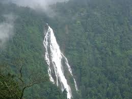
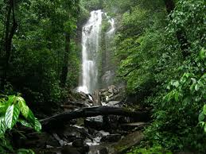
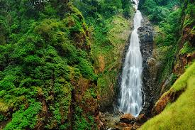

Jog Falls
Jog Falls is one of the highest plunge waterfalls in India, offering a breathtaking view and a thrilling trekking experience.

Barkana Falls
Barkana Falls is among the top ten highest waterfalls in India, offering a stunning view amidst dense forests.

Hidlumane Falls
Hidlumane Falls is a series of cascading waterfalls surrounded by the lush greenery of the Western Ghats.

Dabbe Falls
Dabbe Falls is a hidden gem in the Western Ghats, known for its pristine beauty and adventurous trek.